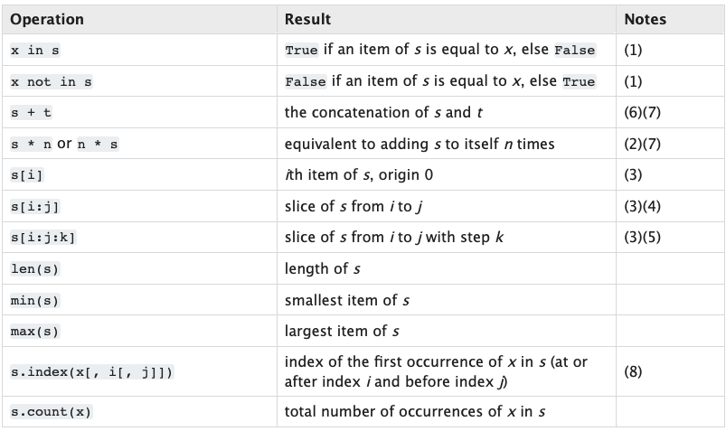
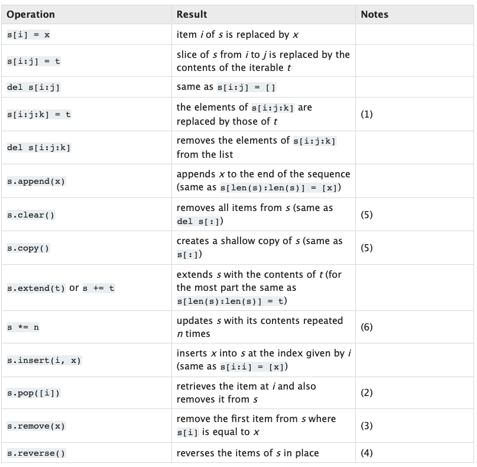
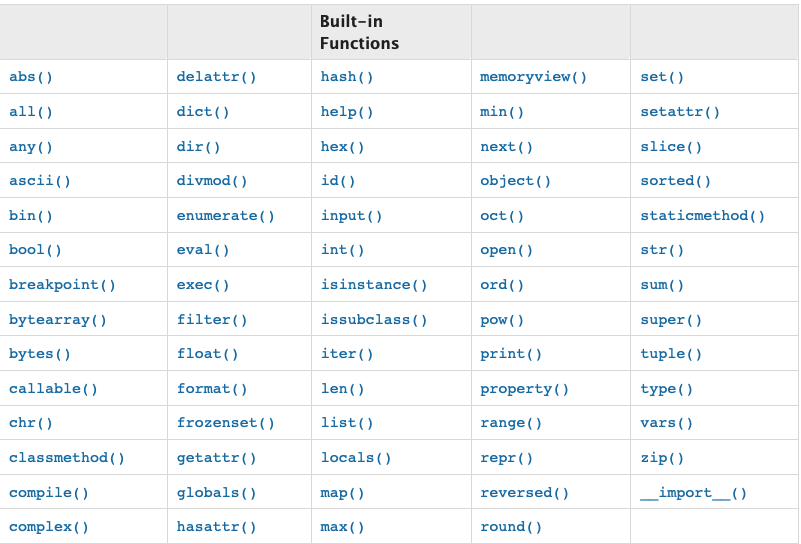

노마드 파이썬 이론
이론
노마드 파이썬 강의를 보고 파이썬 이론 정리 노트를 작성한다.
1. Variable
a = somthing
int형
a = 2
b = 3
print(a + b)
string 형
a = 'like this'
b = "like this"
print(a + b)
boolean
a = True
b = False
Float
a = 3.12
b = 52.123
type
a = 2
b = "like this"
c = True
d = 3.14
print(type(a))
print(type(b))
print(type(c))
print(type(d))
================
<class 'int'>
<class 'str'>
<class 'bool'>
<class 'float'>
none
a = None
==========
<class 'NoneType'>
파이썬에서는 _ 를 써서 단어를 연결한다. (Snake case)
**super_long_variable = 1**
2. List in Python
days = ["Mon", "Tue","Wed", "Thur", "Fri"]
print(days)
파이썬의 문서를 살펴보면 List 타입에 대한 부분이 있고 List에서 사용할 수 있는 메소드들이 나와있다.
https://docs.python.org/3/library/
Common

Mutable

3. Tuple and Dicts
Tuple 은 Commone 오퍼레이션만 가능, 변경 불가
days = ("Mon", "Tue","Wed", "Thur", "Fri")
print(days[0])
print("Mon" in days)
dicts 타입은 Swift의 딕셔너리 타입과 같은거 같다.
nico = {
"name" : "Nico",
"age" : 29,
"korean" : True,
"fav_food" : ["kimchi","Sashimi"]
}
print(nico)
==================================================================
{'name': 'Nico', 'age': 29, 'korean': True, 'fav_food': ['kimchi', 'Sashimi']}
배열이든 딕셔너리든 튜플이든 아무 타입이나 들어간다.
4. Built-in Functions
https://docs.python.org/3/library/functions.html

5. Creating a Your First Python Function
def 키워드로 함수를 정의한다. 함수명, 인자를 정의하고 콜론(:) 으로 줄을 바꾼다. 이 때 함수의 바디 부분을 정의할 때에는 들여쓰기가 아주 중요하다.
def say_hello():
print("hello")
say_hello()
====================
hello
6. Function Arguments
def say_hello(who):
print("hello", who)
say_hello("nico")
say_hello(True)
====================
hello nico
hello True
아무 타입이나 상관 없지만 인자가 없으면 에러 발생
하지만 Default Value라는 개념이 있다. Swift의 디폴트 값과 똑같은 개념이다.
def plus(a, b = 0):
print(a + b)
plus(1)
=======================
1
7. Returns
def plus(a,b):
return a + b
print(plus(1,3))
=================
4
8. Keyworded Arguments
Swift에서 사용하던 라벨을 의미하는 것 같다.
def plus(a,b):
return a + b
print(plus(b = 3, a = 1))
============================
4
def say_hello(name, age):
return 'Hello name you are age years old'
hello = say_hello('nico', '12')
print(hello)
============================================
Hello name you are age years old
name과 age 변수를 인식하지 못했다. 어떻게 해야 할까? 맨 앞에 f 를 붙이면 된다. 이 때 f는 format을 의미한다.
def say_hello(name, age):
return f'Hello {name} you are {age} years old'
hello = say_hello('nico', '12')
print(hello)
=================================================
Hello nico you are 12 years old
9. if else elif
만약, b가 str 타입이면 None을 반환하도록 코딩함.
def plus(a,b):
if type(b) is not int:
return None
else:
return a + b
value = plus(12, '10')
print(value)
타입 체크를 강화해보면
def plus(a,b):
if type(b) is int or type(b) is float:
return None
else:
return a + b
value = plus(12, 12.3)
print(value)
==================================================
24.3
10. Boolean Operations
def age_check(age):
print(f'you are {age}')
if age < 18:
print('you cannot drink')
elif age == 18:
print('you are new to this!')
elif age > 20 and age < 25:
print('you are still kind of young')
else:
print('enjoy your drink')
age_check(18)
age_check(23)
age_check(29)
==========================================
you are 18
you are new to this!
you are 23
you are still kind of young
you are 29
enjoy your drink
11. for in
days = ('mon','tue','wed','thu','fri')
for value in days:
if value == 'wed':
break
else:
print(value)
====================================
mon
tue
12. Modules
math 모듈을 import 해보자
import math as math
print(math.ceil(1.2))
=====================
2
math 모듈 속에 있는 ceil 함수를 사용했다.
많은 built-in 모듈들이 있다 문서에서 확인 가능하다.
특정 함수만 가져오고 싶을 경우 from, import 를 사용한다.
from math import ceil, fsum
print(ceil(1.2))
print(fsum([1,2,3,4,5,6,7]))
13. 컨셉
argument, keyword argument
파라미터를 무한으로 넣고 싶을 때가 있다. print 함수의 경우 무한으로 파라미터를 넘길 수 있는데, 이 방법을 알아보자.
- 하나만 붙는 변수는 *args 로 여러 인자를 tuple 형태로 받을 수 있게 됩니다.
def plus(a, b, *args): print(args) return a + b print(plus(1,2,3,4)) ======== (3,4) 3 - 가 두개 붙은 케이스를 keyword arguments라 하는데 **kargs 특정 키워드와 특정 값을 매칭해서 딕셔너리 형태로 사용할 수 있습니다.
def plus(**kargs): print(kargs) return kargs['a'] + kargs['b'] print(plus(a=1,b=2)) ================================ {'a': 1, 'b': 2} 314. class
클래스를 만들어 사용할 수 있습니다. 자바 스크립트 처럼 내부 속성을 나중에 추가할 수 있습니다.
class Car():
wheels = 4
doors = 4
window = 4
seats = 4
porche = Car()
porche.color = 'Red'
print(porche.color)
=====================
Red
메소드도 만들어 사용할 수 있습니다.
class Car():
wheels = 4
doors = 4
window = 4
seats = 4
def start():
print('start')
porche = Car()
proche.start()
=====================
Traceback (most recent call last):
File "main.py", line 23, in <module>
porche.start()
TypeError: start() takes 0 positional arguments but 1 was given
메소드를 호출하니 에러가 발생했습니다. 인자가 빠졌다는 내용인데, 모든 메소드는 첫번째 인자로 self가 자동으로 들어갑니다. start에 파라미터를 하나 추가해줘야 합니다.
숨겨진 메소드도 있습니다. swift의 debugDescription처럼 str 메소드는 객체를 str으로 만드는 메소드로 이를 확장해서 내가 원하는 결과를 출력하게 할 수 있습니다.
class Car():
wheels = 4
doors = 4
window = 4
seats = 4
def start(self):
print(self.color)
def __str__(self):
return 'asdfasdfadsfa'
print(porche)
===========================
asdfasdfadsfa
dir 함수로 찍어보면 숨겨진 부분들을 전부 볼 수 있습니다.
print(dir(porche))
==================
['__class__', '__delattr__', '__dict__', '__dir__', '__doc__', '__eq__',
'__format__', '__ge__', '__getattribute__', '__gt__', '__hash__', '__init__',
'__init_subclass__', '__le__', '__lt__', '__module__', '__ne__', '__new__',
'__reduce__', '__reduce_ex__', '__repr__', '__setattr__', '__sizeof__',
'__str__', '__subclasshook__', '__weakref__', 'color', 'doors', 'seats',
'start', 'wheels', 'window']
생성자도 만들 수 있습니다.
class Car():
def __init__(self, *args, **kwargs):
wheels = 4
doors = 4
window = 4
seats = 4